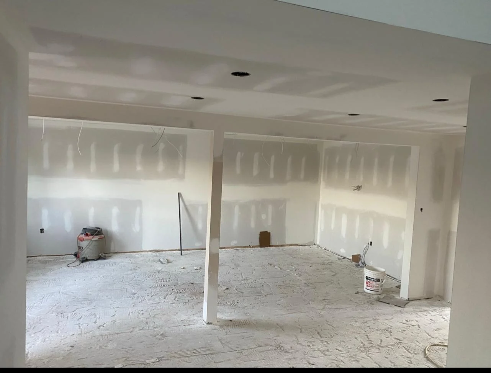
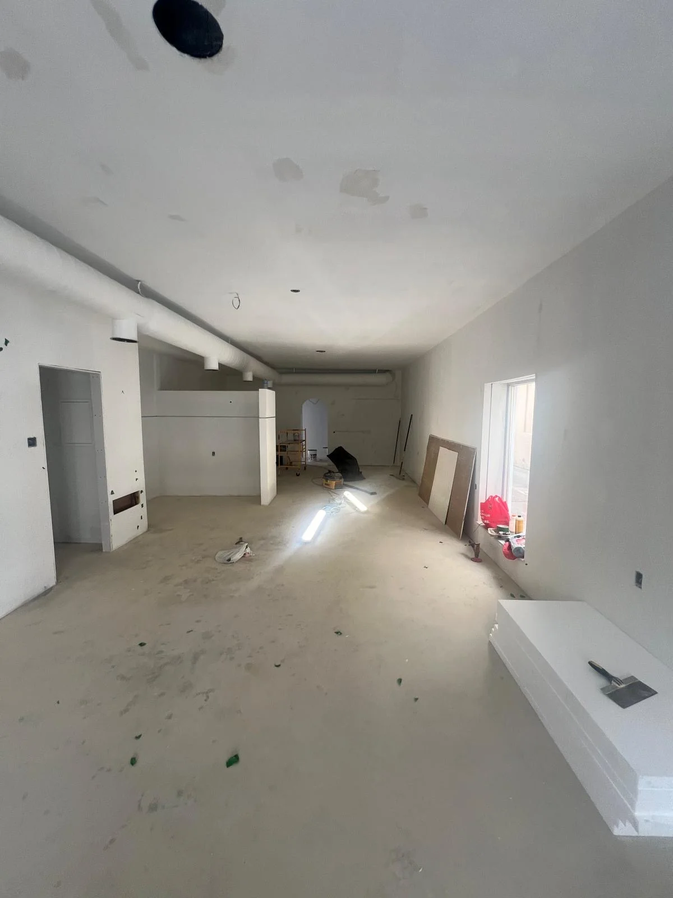
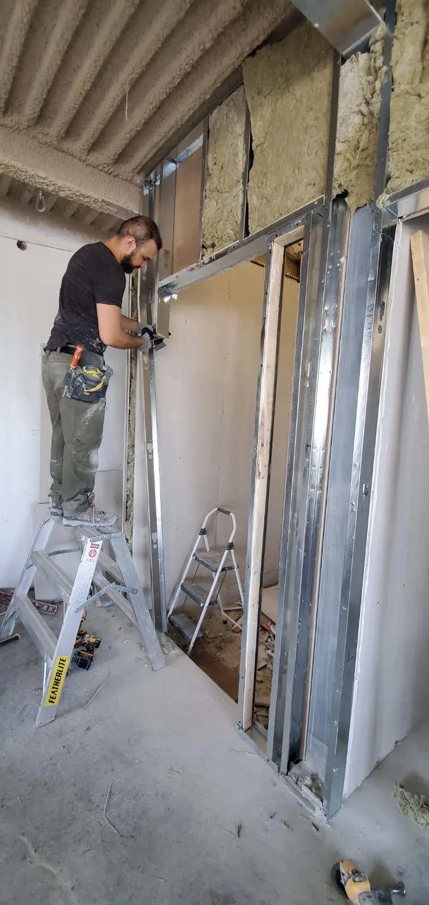

Popcorn Ceiling Removal
Tested, scraped, skim-coated and repainted for a flat modern ceiling.
Learn More about Popcorn Ceiling Removal →Service Area · North York, ON
Popcorn ceilings, basement finishing and drywall repair in North York’s post-war bungalows, backsplits and semis. Roughly fifteen minutes from our Scarborough shop.
Most of North York went up between the early 1950s and the late 1970s, and that single fact predicts most of the work we do there. Bungalows, backsplits and semis from that period share a specific set of problems, and they are not the problems you get in a new subdivision.
The two calls we take most often are popcorn ceiling removal and basement finishing. Stipple was the standard ceiling finish for that entire build period, so a very large share of North York ceilings still carry it. And those basements were poured as storage rather than as living space, which is why finishing one here involves more than it does in a house built with the basement already in mind.
The third regular call is repair in the oldest stock, where the walls are plaster over wood lath rather than board and a patch has to be built up rather than simply filled.
Post-War Housing
These come up on nearly every North York job. None of them are unusual, but all of them are easier to plan for than to discover halfway through.
We would rather raise all of this at the quote than send you a change order later.
Recent Work
Photos are from jobs across our service area. We have not labelled them by city, because we would rather show you the work than claim a postcode.

Basement Layout Taped

Primed and Ready

Framing and Insulation
Keep Exploring
Tested, scraped, skim-coated and repainted for a flat modern ceiling.
Learn More about Popcorn Ceiling Removal →Unfinished basements turned into livable square footage.
Learn More about Basement Drywall Finishing →Plaster and drywall patched level with the wall around it.
Learn More about Drywall Repair & Patching →Common Questions
We strongly recommend one. Texture applied before the mid-1980s can contain asbestos, and a large share of North York housing dates from exactly that period. A test is inexpensive. Scraping an untested ceiling spreads fibres through the whole house and turns a small job into a very expensive one.
Usually, but the approach changes and the answer has to come from a tape measure rather than a phone call. We measure at the quote and tell you honestly what the space can be. If the height will not support a legal bedroom, you will hear that from us before you have spent anything.
Box it into a bulkhead, in a line that looks deliberate rather than apologetic. Re-routing duct is occasionally worth doing, but it is an HVAC job with a real cost attached, and most of the time a well-placed bulkhead is the better trade.
Patch, in almost every case. Plaster over lath is thicker than modern drywall, so the repair is built up to match the surrounding surface and feathered out wide. Tearing out a sound plaster wall is usually money spent for no gain.
It depends on the size and how much has to be boxed in, so the honest answer comes with the quote. What we can say is that the taping stage sets the pace: mud has to dry between coats, and rushing that is exactly what produces the cracked seams you see a year later.